UV Dose and FluenceUV disinfection operates on purely physical mechanisms, and there are several considerations when designing a reactor. Organisms require a certain amount of UV dose, known in this application as the fluence, over time for sufficient inactivation. The term “dose” usually describes total absorption of radiation, but since molecules absorb only a very small percentage of the total UV light the term “fluence” is preferred. The Bunsen-Roscoe reciprocity law states that radiant energy dose is equal to the product of light intensity and exposure time (Li, 2005). For applications of UV-C radiation on nucleic acids, fluence is the product of UV radiant intensity (also called fluence rate) and residence time, the amount of time the microorganisms are in contact with UV light. The units of fluence are generally reported in mW·s/cm2 or μW·s/cm2 in North America and J/m2 in most parts of the world. Note that 1 mW·s/cm2 = 10 J/m2. |
|
|
(8)
|
Some examples of lethal dose requirements for various common microorganisms are shown in Table 4 below. |
Table 4. Minimum Lethal UV Dose Requirements for Common Microorganisms
|
|
|
|
|
|
Organism |
Type |
Ailment / Symptom |
μW•s/cm2 |
|
Streptococcus |
Bacteria |
Strep Throat |
3,800 |
|
Dysentery Bacilli |
Bacteria |
Diarrhea |
4,200 |
|
Enterococcus faecalis |
Bacteria |
Urinary Tract Infections |
4,500 |
|
Clostridium tetani |
Bacteria |
Tetanus |
4,900 |
|
Pseudomonas aeruginosa |
Bacteria |
Blood infections |
5,500 |
|
Saccharomyces Cerevisiae (Baker’s yeast) |
Bacteria |
Model Laboratory Organism |
6,000 |
|
Influenza |
Virus |
Flu |
6,600 |
|
Staphylococcus |
Bacteria |
Boils, Infection |
6,600 |
|
Bacteriophage (E. Coli) |
Virus |
Diarrhea |
6,600 |
|
Fecal Coliform |
Bacteria |
Diarrhea, Water quality testing |
6,600 |
|
Salmonella |
Bacteria |
Food Poisoning |
10,000 |
|
Hepatitis A virus |
Virus |
Liver inflammation |
11,000 |
|
Bacillus subtilis (spore) |
Bacteria |
Model Laboratory Organism |
12,000 |
|
Legionella Pneumophila |
Bacteria |
Legionnaires' Disease |
12,300 |
|
These are a sample of pathogens known to cause mild to fatal infections. Some pathogens, such as Bacillus subtilis and Bacillus anthracis (Anthrax), are moderately resistant to UV treatment (Nicholson, 2002). According to the IUVA, most regulations require a fluence of at least 40.0mJ/cm2 (40,000 μW·s/cm2) to ensure complete inactivation of all microorganisms.
Turbulence and Reynolds NumberSince the mechanism for UV radiation is physical, it is beneficial to establish proficient mixing via turbulence and to minimize the degree of transverse mixing (AWWA, 1990). Usage of baffles or other physical means of creating a tortuous flow path is recommended to ensure a more even distribution of UV light through all of the water, as shown in Figure 5. This helps create complete mixing so that all target microorganisms in the flow volume can average equal distance from the UV source. Ideal UV dose could be achieved in an ideal plug flow system with perfect radial mixing and no longitudinal mixing (Bolton, 2000).
The characteristics of turbulence in flowing liquids are defined by the dimensionless quantity Reynolds number, Re. For fluids in a circular tube (Bird, 2002): |
|
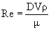 or 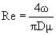 |
(9)
|
where: V = average velocity = volumetric flow rate/cross-sectional area D = tube diameter ρ = density of fluid μ = viscosity of fluid w = mass flow rate = volumetric flow rate * fluid density |
|
Flow is turbulent if the Re for the system is about 4,000 or greater and is laminar for Re less than about 2,100. Reynolds numbers between 2,100 and 4,000 describe a transition region, where flow could be turbulent or laminar based on conditions at the entrance of the tube. For liquid flow through an annulus, i.e. between two coaxial cylinders as seen in most UV reactor designs, the Reynolds number includes the difference in diameters (McCabe, 2005): |
|
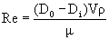 |
(10)
|
where: D0 = inner diameter of the sheath cylinder Di = outer diameter of the inside cylinder For Re calculations of flow through non-circular channels, consult McCabe, 2005. |
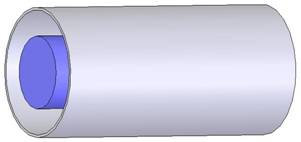 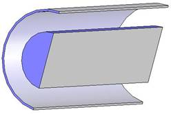
Figure 4. Example Annulus UV Reactor
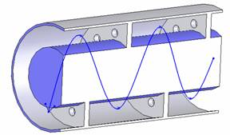
Figure 5. Annulus Reactor with baffles showing water flow
Source Radiant PowerThe source radiant power (Φ) is the radiant power emitted by any radiant power source in all directions, such as a UV lamp. As stated above, power ratings typically fall between 40-100W for low-pressure lamps and 1-5kW for medium-pressure lamps (Bolton, 2002). Through a non-absorbing medium, the radiant intensity (I) of UV light will not diminish. In this case, for a point source: |
|
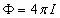 |
(11)
|
Most UV lamps for UPW application are cylindrical tubes that can be modeled as multiple point sources lined next to each other. This technique is known as Multiple Point Source Summation (MPSS) and can be integrated using a technique called line source integration (LSI) to find the fluence rate (E’) through water as a function of height from the center of the lamp (H) and distance from the lamp (r) of length (L), neglecting absorption and reflection (Bolton, 2000): |
|
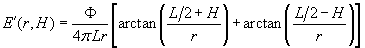 |
(12)
|
The average value of any three dimensional functions is found by integrating across a volume boundary and dividing by the volume (shown in cylindrical coordinates): |
|
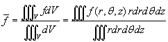 |
(13)
|
Assuming symmetry at any angle, the average fluence rate in an annulus UV reactor with inner radius at the lamp surface (ri) and outer radius at the stainless steel wall (ro) comes to: |
|
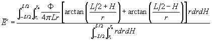 |
(14)
|
However, irradiance does diminish with absorption and reflection. This produces limitations to the size of the UV reactor to maintain an efficient average UV fluence rate. Distance from the lamp surface to the stainless steel wall typically never exceeds 15 cm.
AbsorptionDNA molecules will attenuate UV light through absorption, reducing the fluence rate further from the UV lamp. This absorption modeled by the Beer-Lambert Law depends on the molar absorption coefficient as a function of wavelength (ε(λ)). A list of molar absorption coefficients can be found in Von Sonntag, 1986. The quartz sheath also absorbs minimal wavelengths of germicidal UV light, though this effect is usually ignored. Other sources of absorption, such as metals, are discussed later.
Refraction and ReflectionRefraction occurs when radiant energy is transferred from one medium to another that has a different refraction index. The angle that the light hits the interface between the two media, known as the angle of incidence (θ1), is modified according to Snell’s Law into the angle of refraction (θ2). Refraction generally does not have a large impact on altering fluence rate. In a UV reactor, this refraction occurs twice in the air/quartz/water interface, as shown in Figure 6. Reflection involves the change in direction of radiant energy at an angle of reflection (θR). It describes a certain portion of the energy that is reflected back into the first medium while the rest undergoes refraction, as shown in Figure 6. |
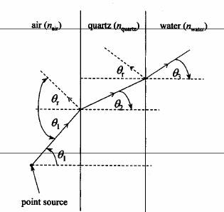
Figure 6. The air/quartz/water interface (Bolton, 2000)
|
Both effects could be ignored in fluence rate calculations with minor error to simplify calculations. Additionally, there is a minor reflection effect at the stainless steel wall that slightly increases the fluence rate (stainless steel has <20% reflection). This reflection is generally ignored unless the radiant power is very large. In general the calculations that do not account for reflection overestimate the fluence rate near the outer edge of the reactor (Bolton, 2000).
For more comprehensive details regarding radiant power, fluence rate, absorption, refraction, and reflection calculations consult Bolton, 2000. |